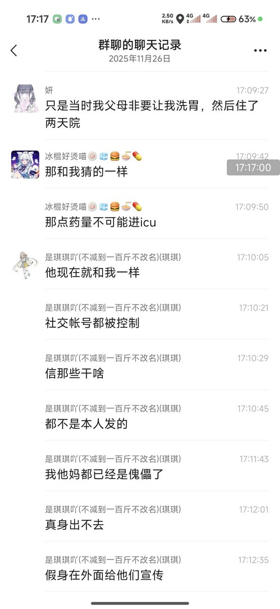

@d79343746a



#N552AA 事件后续
她本人女朋友（wx名：妍）说了自己根本没去icu，而是被家长强制抓去洗胃
进一步证明了我的推测完全合理，那点药量不可能进icu
而ill账号被控制 发的内容严重脱离实际喵 https://t.co/v92QOB6fQW
她本人女朋友（wx名：妍）说了自己根本没去icu，而是被家长强制抓去洗胃
进一步证明了我的推测完全合理，那点药量不可能进icu
而ill账号被控制 发的内容严重脱离实际喵 https://t.co/v92QOB6fQW
最简单最直接的证据很简单，药物过量导致其进ICU那就直接出示病历单出来，一切都可以解决，我在漫展上见过一些地雷女，也跟他们聊过，很多人自身并没有od，他们很多可能就在自残或者买那种哥特式衣服的这一步，没必要对地雷女有刻板印象，他们就一定喝药，一定自残，很多地雷女实际上就跟太妹一样的。 https://t.co/oYSSr1ViaB